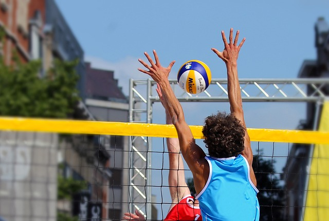

Most Important Volleyball Rules
Objective: The goal of volleyball is to score points by sending the ball over the net into the opponent's court, while preventing the same from happening on your side.
Teams: A team consists of six players, three in the front row and three in the back row. Players rotate positions after each side-out.

Serving: The serve must be hit over the net to the opposing team. The server has one attempt to serve the ball correctly.
Touches: Each team is allowed a maximum of three touches to return the ball. A player may not hit the ball twice consecutively (except for a block).

Scoring: Volleyball uses rally scoring, meaning points can be won on either team’s serve. A match is usually played to 25 points, and a team must win by at least two points.
Rotation: Players must rotate clockwise after winning a serve from the opposing team.
Net Violations: Players cannot touch the net during play. Doing so results in a point for the opposing team.
Attack Line: Back-row players are not allowed to attack the ball above the net's height from in front of the attack line.
Substitutions: Teams are allowed to substitute players during the match, usually up to six times per set.

Timeouts: Each team can request up to two timeouts per set. A timeout lasts for 30 seconds.
Match Format: A standard match is typically played in the best of five sets, with the first team to win three sets being declared the winner.